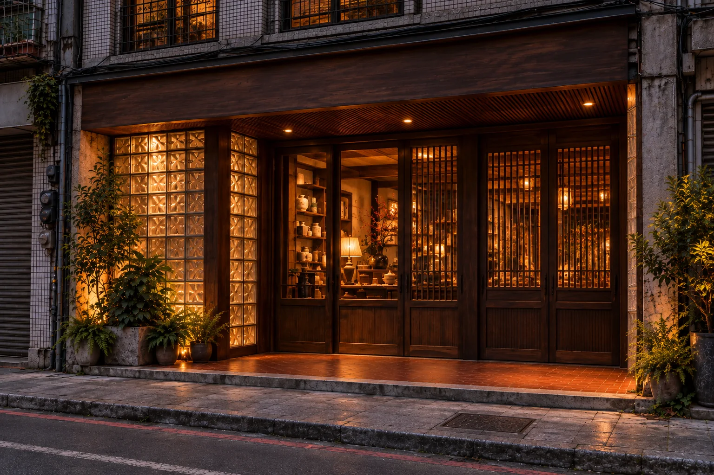
Contemporary Trading House
A speculative retail concept
Conceptual visualisations (AI-generated). Not a built space.

A speculative retail concept
01 The proposition
What if changing collections could strengthen a retail space’s identity rather than dilute it?
The Contemporary Trading House is a speculative retail concept. Its architecture gives it continuity, while its collections change. The idea is that each edition builds on the trading house’s identity and reputation over time, instead of replacing it.
A design and commercial hypothesis, not a guaranteed outcome. The aim is to make commercial space worth experiencing even when a purchase is not immediately intended.
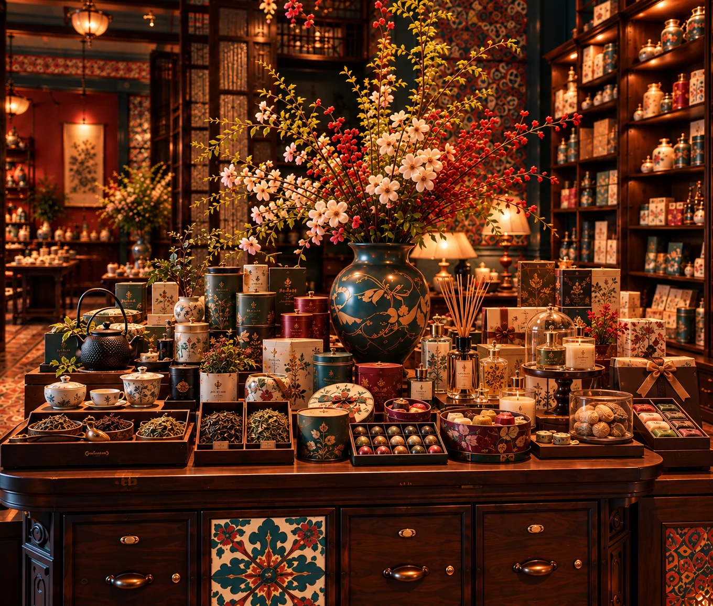
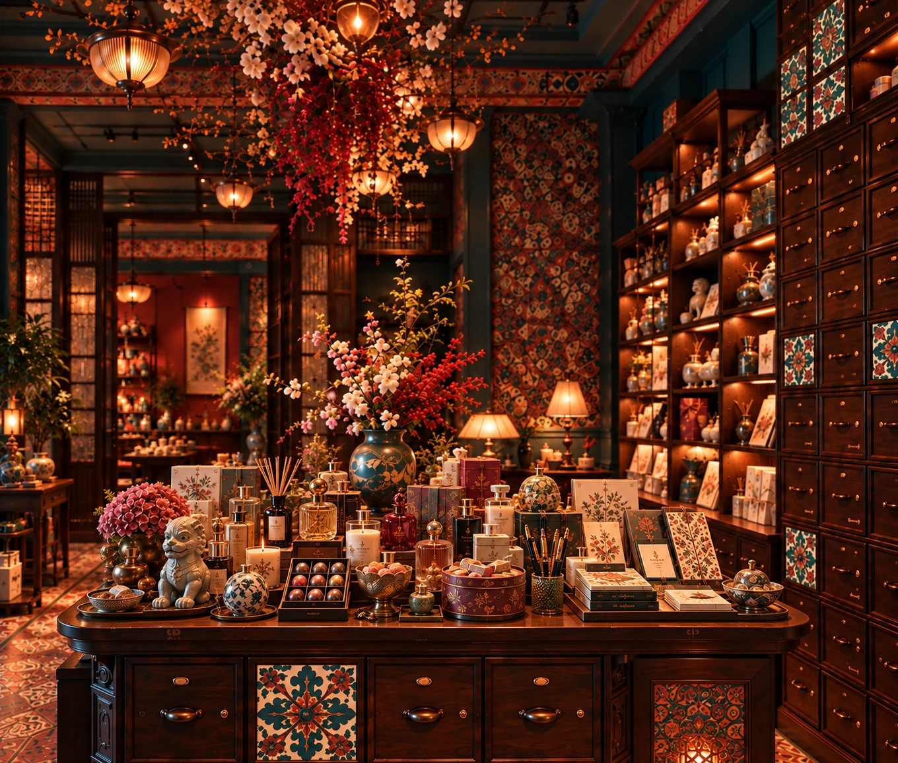
Same room. Different edition.
Department stores and curated multi-brand shops can already have strong identity, discovery and experience. This concept explores a different relationship between space, collection and visitor. The trading house has a permanent architectural identity that doesn’t depend on one product category or participating brand.
Visitors can browse, handle, test, compare, ask questions or simply enjoy the environment without an immediate intention to purchase. Purchasing remains part of the model, but it isn’t the organising centre of the spatial experience.
02 Commerce as encounter
Historical inspiration
Contemporary interpretation
Taiwan’s historic trading centres brought together goods, people, and influences from different places.
Drawing inspiration from the mercantile character of Tainan, Lukang, and Dadaocheng, this concept reinterprets commerce as an experience of curiosity, discovery, and exchange—not simply the moment of purchase.
It borrows the liveliness and abundance associated with trading environments without attempting to reproduce their historical architecture or commercial practices.
The interior’s eclecticism, colour, abundance and theatricality are contemporary interpretations of mercantile character, not reproductions of a historical shop. The concept doesn’t reproduce historical trade practices, commodity networks or merchant business models.
Tainan, Lukang and Dadaocheng are reference points for different expressions of Taiwan’s commercial history. What the concept draws from them is atmosphere and experience: goods and influences converging, the liveliness of a mercantile place, and the chance of meeting something unfamiliar.
03 What changes, what stays
The room stays the same. Each edition is built around one organising idea, developed under the trading house’s single continuing direction rather than handed to independently run pop-ups.
An idea can start from a place, a commodity or a relationship between goods, or from a mix of these. They are starting points, not categories. The link between the goods and the trading house can be direct or unexpected, but it should make sense, never arbitrary.
Visitors don’t need to decode any of it. The idea guides what’s on the table. It isn’t a lesson.
The selection criteria can change. The trading house’s character does not.
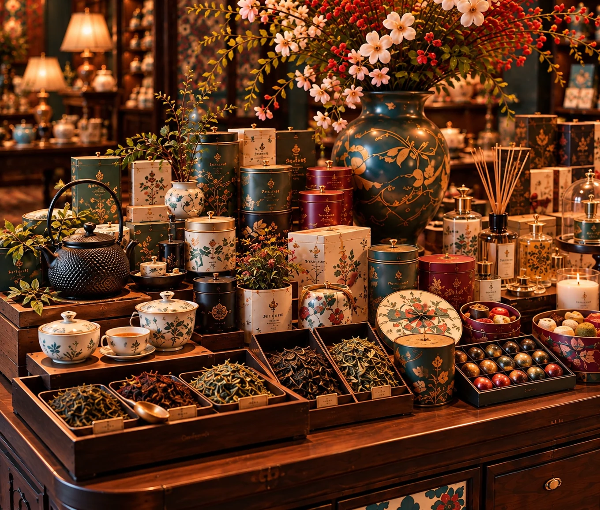
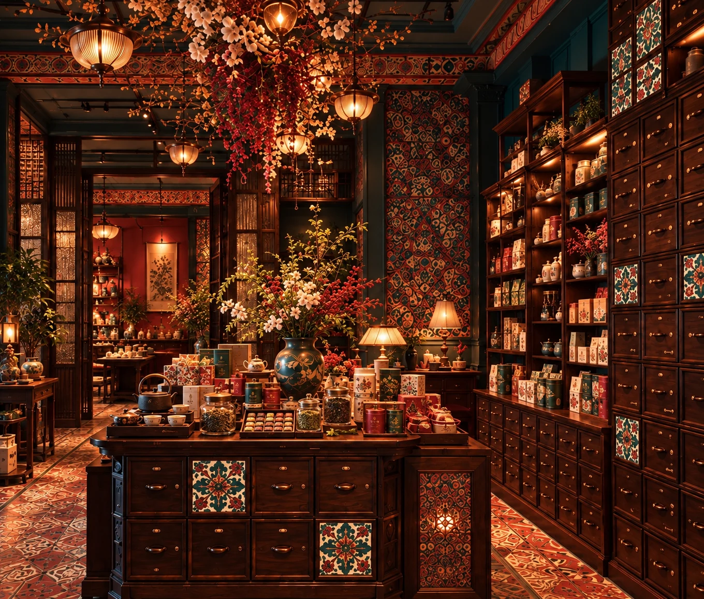
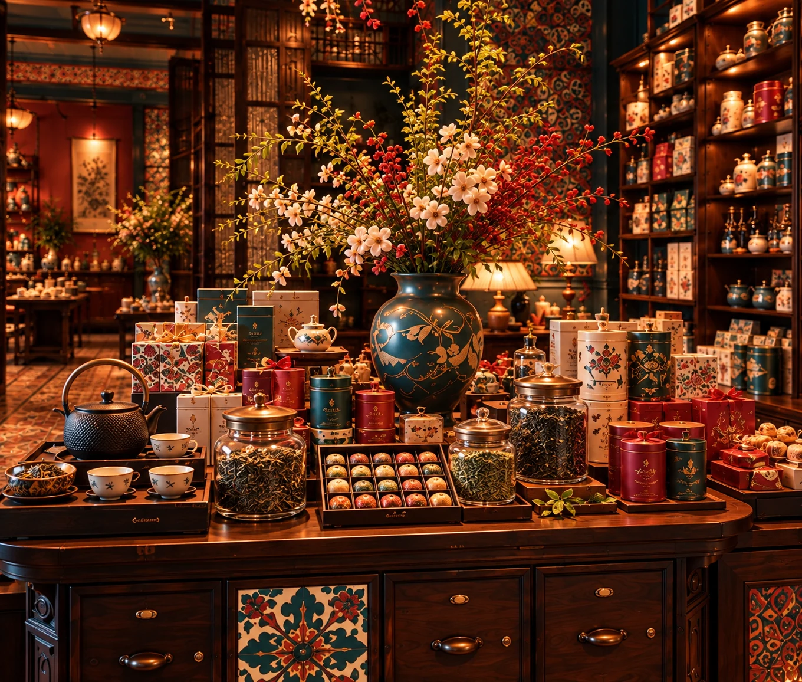
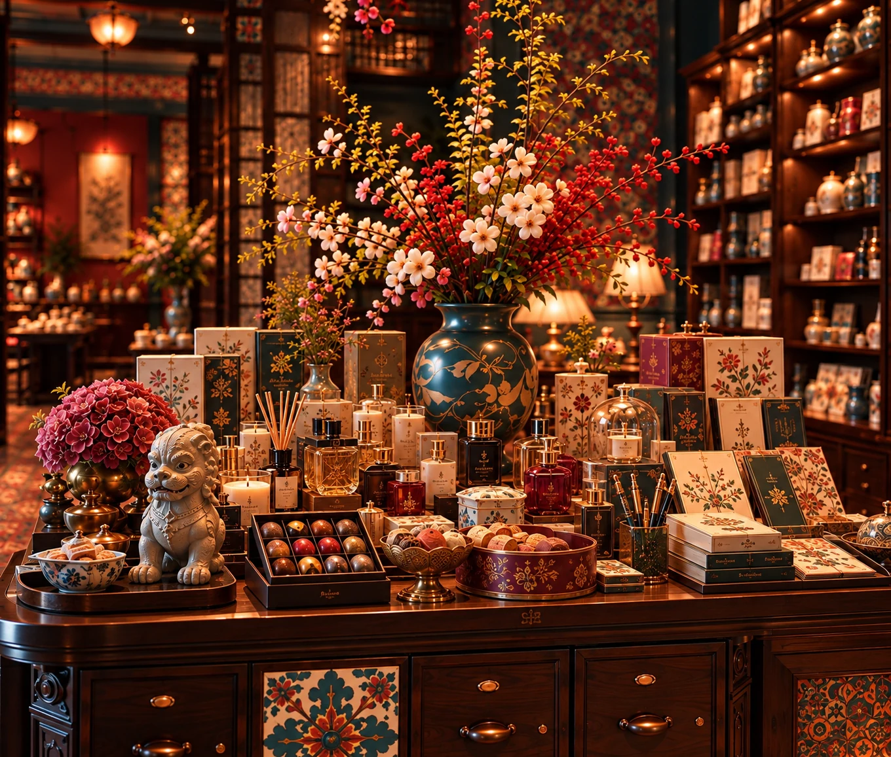
Illustrative edition. The images show an intended mix of goods and how the room adapts, not a finalised supplier selection.
Without a coherent organising idea, changing collections could turn into a reason to sell anything. Each edition needs an idea that also makes sense within the trading house’s broader identity.
For this speculative concept, a single permanent operator controls the trading house’s identity, spatial environment, curation and commercial operations. The operator may own or lease the premises; who owns the property isn’t important to the proposition. Different makers, brands and producers can take part in successive collections, but they don’t take over the space independently as rotating tenants.
The three editions are working examples, and the images are AI-generated visualisations. They show the kind of merchandise mix each idea could produce and how the same room can hold different collections. They aren’t verified assortments from real makers, and they don’t claim that any product has a documented connection to a place.
That successive editions strengthen rather than dilute the trading house’s identity and reputation over time; that they introduce different makers; and that they give visitors reasons to return. These are hypotheses, not validated outcomes.
04 Architecture of encounter
The space is organised around degrees of engagement. Visitors can go as far in as they like, in any order.
Curiosity
The storefront offers glimpses without announcing everything.
Discovery
A theatrical interior, with a central collection and smaller displays spread through the cabinetry.
Examination
Goods can be handled, tested, compared and discussed.
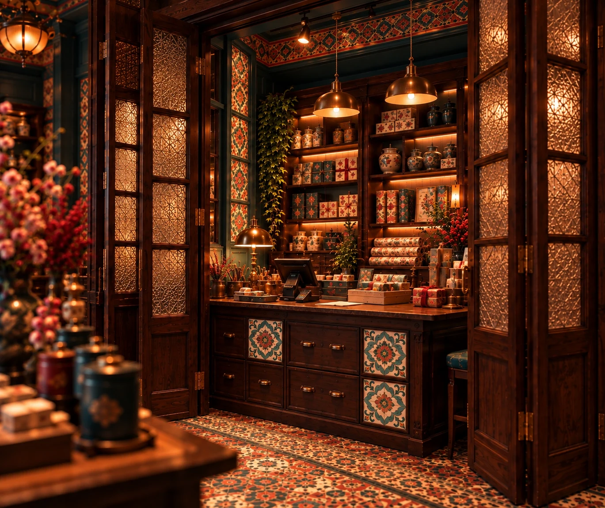
Service
Purchasing, wrapping and other services stay discreet, away from the main hall.
That is why the central table isn’t meant to hold everyone: different activities need different kinds of space. Purchasing is part of the model, but it isn’t where the space leads.
Glimpses from the street give people a reason to come in without asking them to commit. The hall spreads attention across a central collection and the cabinetry. The Merchant’s Room supports the more involved encounters that some visitors want. Keeping service discreet means transactions never dominate the main hall. In the visualisation it sits in a compact alcove behind partly open folding doors, so it is easy to find without being on show.
These are different levels of possible engagement, not a mandatory circulation sequence. The concept has no fixed building dimensions, so it uses framing, not a floor plan.
The interactive room above is a short presentation of renderings, not a model of the store. In a built version, visitors would meet these degrees of engagement through movement and use, not clicks.
05 The visual language
How can a contemporary trading house acknowledge local material references without looking like a reconstructed historical shop?
By borrowing selectively and letting the rest be deliberately eclectic.
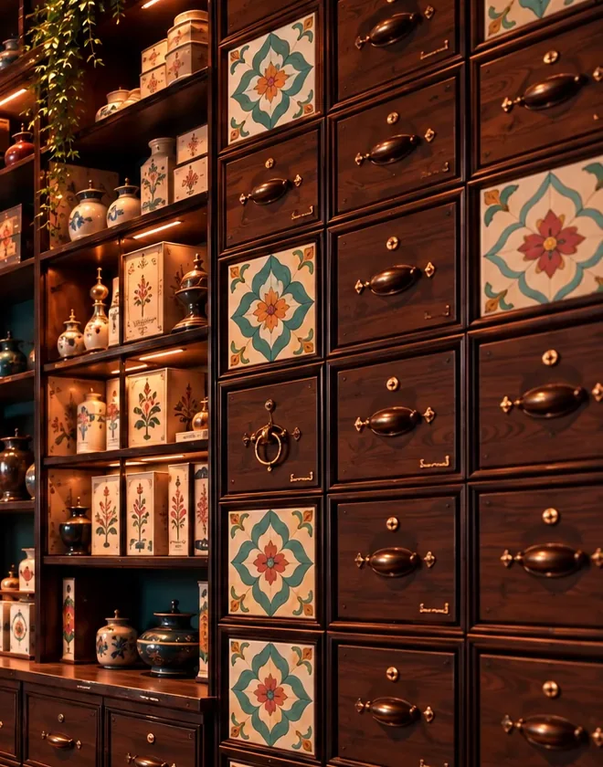
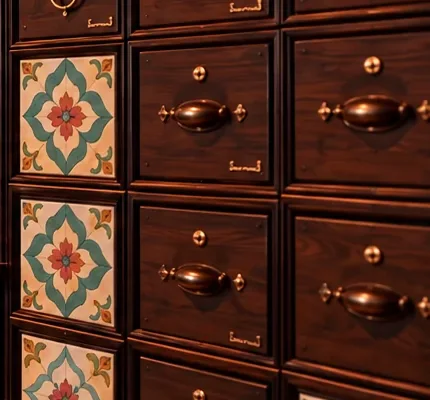
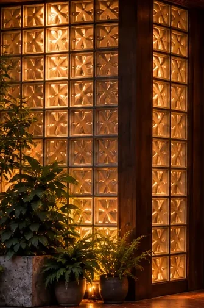
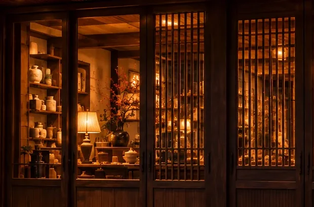
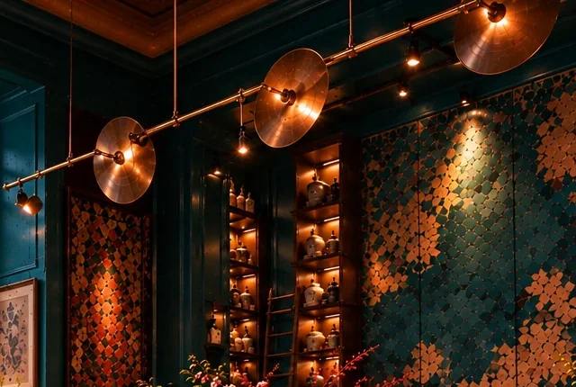
The richness is deliberate. The room doesn’t reproduce one period or tradition. It interprets a culture of commercial encounter in a contemporary design language.
The design draws on selected Taiwanese material references. A material or pattern is attributed to a place only where that has been verified, which is why the labels say “inspired” or “encountered”.
The wider mix of influences behind the theatrical atmosphere is intentional. The interior isn’t restrained in the name of conventional luxury retail, and it isn’t a reconstruction of any one historical decorative style.